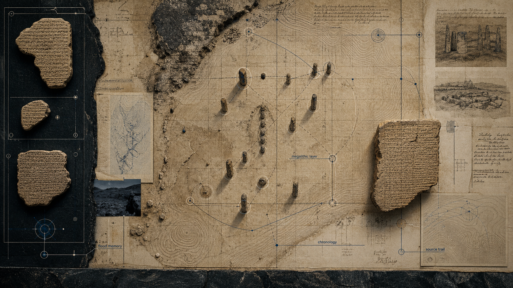

Matthew LaCroix
Matthew LaCroix is a recurring X Files / Ancient Civilizations source focused on alternative ancient history, Sumerian and Mesopotamian traditions, flood myths, sacred symbolism, megalithic sites, Lake Van/Eastern Anatol

On this page
Generated from Obsidian source note. Treat claims as research leads until corroborated by primary material.
Generated from the vault source. Use linked sources and cross-references as the verification trail.
Matthew LaCroix
Role in the wiki
Matthew LaCroix is a recurring X Files / Ancient Civilizations source focused on alternative ancient history, Sumerian and Mesopotamian traditions, flood myths, sacred symbolism, megalithic sites, Lake Van/Eastern Anatolia and possible pre-catastrophe knowledge systems.
Treat him as a source node, not an authority node. His claims should be split into:
- textual / comparative claims,
- site and archaeology claims,
- geological claims,
- cosmological speculation,
- esoteric / consciousness interpretation.
Public project
LaCroix’s public platform is The Stage of Time. As of the current wiki snapshot, his site presents:
- books including The Missing Key: Ancient Code of a Lost Civilization,
- documentary development around a “missing code” / global design tradition,
- Van-region field tours in Turkey,
- comparative symbol claims involving T-forms, step pyramids, inverted step-pyramid geometry and sacred architecture,
- claims involving sites such as Lake Van, Ayanis, Kef Kalesi, Çavuştepe, Meher Gate, Tiwanaku, the Sphinx Temple and India’s Kailasa Temple.
Source: https://thestageoftime.com/
Main thesis cluster
LaCroix argues that a deeper layer of ancient history may be preserved through:
- Sumerian and Akkadian flood texts,
- mythic records of sages and survivor figures,
- sacred geometry and global symbolic recurrence,
- megalithic stonework and older foundations under later sites,
- late-Pleistocene catastrophe memory,
- mystery-school and hermetic transmission,
- initiatory temple architecture.
Strongest lanes
1. Mesopotamian flood lineage
This is the strongest lane because it is anchored in actual ancient texts.
LaCroix’s key comparative chain:
- Ziusudra,
- Atrahasis,
- Utnapishtim,
- Noah.
Relevant dossier: mesopotamian-flood-texts-and-noah-lineage.
2. Reuse layer vs origin layer
LaCroix repeatedly argues that later civilizations reused older sacred architecture. This is useful as a research lens even when the specific age claims remain unverified.
Questions:
- Which layer is being dated?
- Is the dated layer original construction or later occupation?
- Is a site called a fortress because of original function or later reuse?
3. Lake Van / old Holy Land
LaCroix treats Lake Van / Eastern Anatolia as a possible source zone for symbolic systems.
Relevant dossier: lake-van-urartu-and-old-holy-land-thesis.
4. Underground survival infrastructure
LaCroix reads Derinkuyu/Kaymakli as potential catastrophe survival systems rather than only defensive refuges.
Relevant dossier: derinkuyu-kaymakli-underground-cities.
High-skepticism lanes
These should be preserved but clearly marked:
- dead binary companion / 12,500-year reset cycle,
- plasma/CME destruction of ancient sites,
- ancient temples as literal consciousness technology,
- global sacred-science network without direct transmission evidence,
- vitrified basalt as catastrophe proof without independent geology.
Key source ingested
- something-big-happened-in-12000-bc-matthew-lacroix
- YouTube source:
https://www.youtube.com/watch?v=A_LsUSxTm7A&t=3933s - Local transcript:
raw/articles/jesse-michels-something-big-happened-12000-bc-matthew-lacroix-transcript-2026-04-24.txt
Claims from the Jesse Michels interview
Stronger / researchable lanes
- The Noah flood story has older Mesopotamian analogues in Gilgamesh, Atrahasis, Eridu Genesis and related traditions.
- Ziusudra / Utnapishtim function as earlier flood-hero figures.
- Later cultures often rebuild on earlier sacred sites, complicating dating and attribution.
- Derinkuyu / Kaymakli and related underground cities deserve a survival-infrastructure dossier.
- Some ancient sites may need reinterpretation through stratigraphy, quarry analysis, stonework and dating methods rather than later cultural labels alone.
Pattern lanes
- T-forms, step-pyramid forms, pine cone, handbag, tree of life, sun cross, triadic doorway and related motifs recur across several traditions.
- Lake Van / eastern Turkey is presented as a possible symbolic source region or “old Holy Land”.
- Mystery traditions may preserve fragments of older sacred-science knowledge.
Speculative lanes
- Older Dryas / Younger Dryas as paired civilizational reset windows.
- Plasma / CME events as drivers of catastrophic destruction.
- Dead binary companion / 12,500-year reset cycle.
- Ancient temples as consciousness or resonance technologies.
- Celestial intelligence / guardian framing behind later angel/demon/UFO interpretations.
Verification needs
1. Identify exact editions/translations LaCroix uses for Atrahasis, Epic of Gilgamesh, Eridu Genesis and Sumerian King List.
2. Verify site names and spellings: Kef Kalesi / Adilcevaz, Ayanis, Çavuştepe, Meher Gate, Lake Van.
3. Find independent academic or geological support for vitrified basalt, quarry-distance and stone-composition claims.
4. Separate LaCroix’s stronger Mesopotamian textual argument from his more speculative cosmology.
5. Build a motif atlas with images, dates and conventional interpretations.